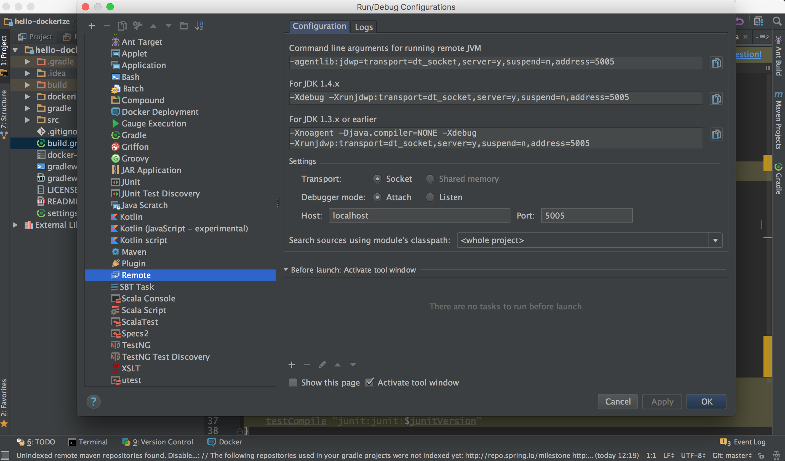
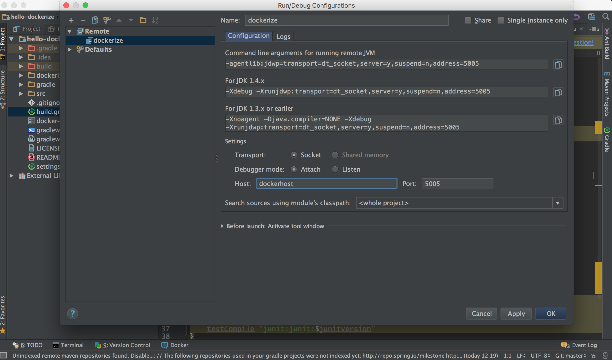
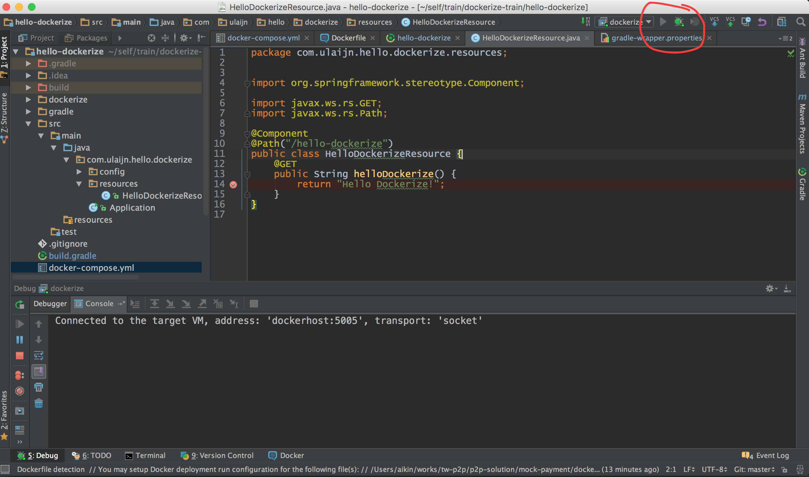
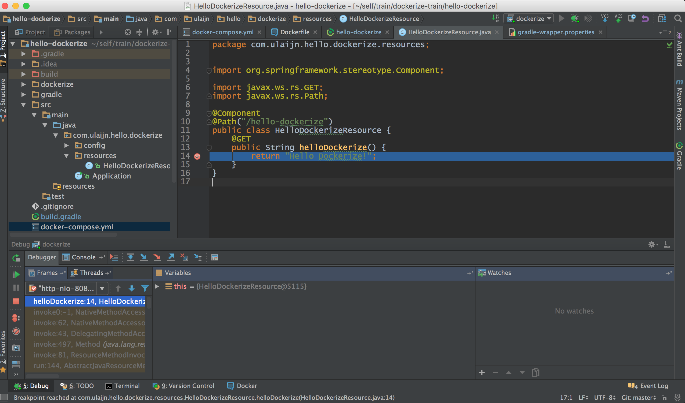

上一篇容器化开发环境已经简单的介绍了如何容器化开发环境。在开发过程中，很多时候都需要通过断点的方式来调试程序或定位BUG，那么如何断点调试运行在容器中的应用呢？？？
容器就像一个虚拟机，就像一个远程的服务器，要断点调试容器中的应用，就像要断点调试虚拟机和远程的服务器上的应用一样。如何配置一个可以远程断点调试的应用，每个语言，每个框架都有不同的方式，接下来介绍的例子使用的技术栈如下：
接下来会基于上一篇博客中的DEMO hello-dockerize 进行扩展。
clone code repo
1$ git clone https://github.com/aikin/hello-dockerize.git更新
build.gradle文件，在文件中写入apply plugin: "application"和123456/*remote debug setup*/applicationDefaultJvmArgs = ["-Xdebug -Xrunjdwp:transport=dt_socket,address=5005,server=y,suspend=n"]更新
docker-compose.yml文件1234567891011web:build: ./dockerizeenvironment:- LANG=C.UTF-8- TERM=xterm- DEBUG=trueports:- "8080:8080"- "5005:5005"volumes:- .:/hello-dockerize启动容器
1$ docker-compose run --service-ports web配置 IntelliJ IDEA
- 打开工具栏
Run–>Edit Configurations
- 添加新配置 点击加号，选择
Remote，将 Hostlocalhost修改为docker-machine ip machine-name获取的IP，在/etc/hosts文件中绑定的本地域名dockerhost
在容器中启动服务：
1root@b73c06ebe59f:/hello-dockerize# ./gradlew bootRun --debug-jvm --stacktrace启动 IntelliJ IDEA 的 debugger 模式
- 点击
debug按钮
- 打开浏览器访问
http://dockerhost:8080/hello-dockerize，如果你也看到下面的画面，恭喜你成功啦。
- 点击
- 打开工具栏
学会断点调试容器中的应用，再也不用为我那乌黑亮丽的头发着急啦！！！